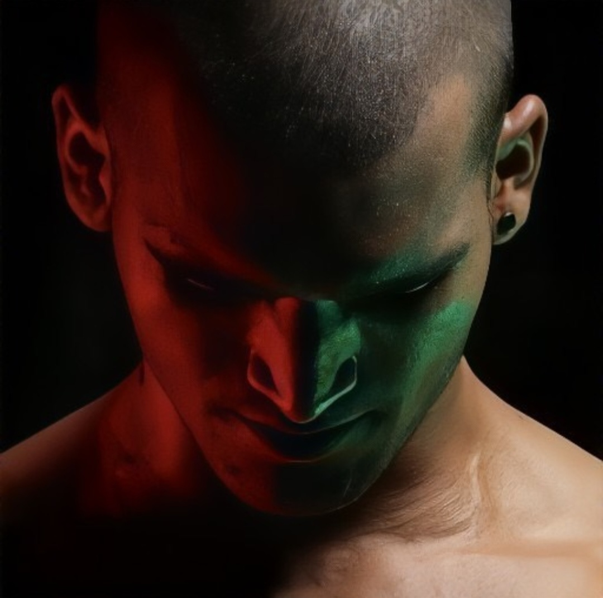

Amit Ku Yadav
Public Representative · Social Worker · Community Leader
Personal projects, experiments, and things I’m tinkering with.
Family & Working Members
Connect
I believe meaningful conversations build strong communities. Feel free to reach out for discussion, collaboration, or service.
Get in Touch